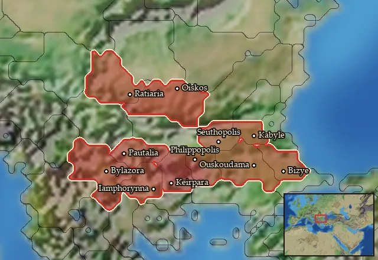

Thracian Sica Cavalry


Class: light · Category: cavalry · Men per unit: 30
Reforms: Unlocked by Second wave of military innovations have arrived!, Thracian Sica Cavalry Reforms
Description
The Thracian Sica Cavalry is a reform unit for Thracian factions. They are protected by Chalcidian and Attic helmets, thureos shields, and greaves. Wearing Thracian patterned tunics, their offensive equipment consists of javelins and the iconic sicas: sharp curved swords that can easily cut off the limbs of any person on the receiving end! These men are a very effective melee unit that can stay in prolonged combat much longer than either lancers or hippakontistai.
Historical background
The Thracian sica was a curved sword, slightly shorter than the romphaia. The word was probably the Roman name for curved swords and knives in general, as they also called the swords of Thracian gladiators and Celtic knives sicas (Webber, The Gods of Battle (2011), ch. The Sica – Sword or Romphaia?). Similar to the romphaia or the falx, the curve of the sica allowed it to easily cut through limbs. Valerius Maximus (III. 2. 12) says a Thracian rider in the service of the Pergamene usurper Aristonikos cut off the head of the consul Crassus with a sica in 130 BC, and according to 2 Macc. XII, 32-35, in the battle of Marissa in 163 BC, a Thracian horseman in Seleucid service cut off the arm of a Jewish rebel, probably with his sica. It was less unwieldy than a romphaia and thus allowed for better usage on horseback.
The adoption of the thureos (oblong shield) must have happened before the Celtic invasion of Greece in 279 BC, as it appears in earlier sources (Webber (2011) ch. New Shields). A Thracian cavalryman on a tombstone from Abdera is armed with a thureos (Sekunda, Seleucid Army (1993), fig. 22) and Thracian cavalry continued carrying oval shields well into the time of their Roman service (tombstone of Rufus Sita, RIB 121). For clothing, the Thracian sica cavalrymen wear white tunics with black underlayers, and are additionally equipped with greaves (Plut. Aemilius 18, 5), and javelins. Their Chalcidian and Thraco-Attic helmets were widespread in Thrace at the time, as can be seen on the tomb painting of the royal necropolis in Kazanlak and in Thracian findings (Chalcidian helmet in the grave of Seuthes III: Marazov, Philomele's Tongue (2011), p. 174).
Stats
| Rank in roster | ||
|---|---|---|
| Men per unit | 30 | █········· 8% |
| Attack | 16 | ████████·· 80% |
| Charge bonus | 22 | ████████·· 77% |
| Defence | 27 | ████······ 35% |
| · armour | 7 | ████······ 42% |
| · defence skill | 16 | ███······· 28% |
| · shield | 4 | █████····· 48% |
| Morale | 11 | ████······ 39% |
| Discipline | Normal | |
| Training | Untrained | |
| Recruitment cost | 1,788 dn | ████······ 35% |
| Upkeep per turn | 720 dn | ███████··· 69% |
| Turns to recruit | 3 |
Weapons
| Primary | Secondary | Primary | Secondary | Primary | Secondary | Primary | Secondary | ||||
|---|---|---|---|---|---|---|---|---|---|---|---|
| Attack | 16 | 8 | Charge bonus | 22 | 23 | Type | thrown · blade | melee · blade | Damage | piercing | slashing |
| Projectile | javelin | — | Range | 50 | — | Ammunition | 2 | — | Properties | Used just before charging into combat | Armour-piercing (counts only half the target's armour) |
Defence
| Primary | Secondary | Primary | Secondary | Primary | Secondary | Primary | Secondary | ||||
|---|---|---|---|---|---|---|---|---|---|---|---|
| Total | 27 | — | Armour | 7 | — | Defence skill | 16 | — | Shield | 4 | — |
Condition and terrain
| Hit points | 1 | Mount | medium horse | Ground: scrub / sand / forest / snow | -1 / 0 / -4 / 0 | Charge distance | 40 |
| Formations | Square |
Technical stats
| Time between blows (primary / secondary) | 2.5 s / 2.5 s | Extra fatigue in hot climates | 1 | Spacing between men: close / loose | 2 × 4.8 m / 3 × 7.2 m | Default ranks | 5 |
In battle: Good stamina
Who can recruit it
A core roster unit for 7 factions, each able to raise it anywhere they hold the right building:
Asti · Bessi · Cabyle · Dentheletae · Maedi · Odrysian Kingdom · Triballi
Any faction holding one of the provinces below can field it.
Exactly what a settlement must have, route by route (5)
| Building | Also requires | Building | Also requires | Building | Also requires | Building | Also requires |
|---|---|---|---|---|---|---|---|
| Any settlement | Tier 2 Military Industrial Complex · Second wave of military innovations have arrived! · Thracian area of recruitment · Any Government (Dependency, Indirect Rule or Direct Rule) · Tier 2 Colony not built · Requires resource horses or horses supplied factionwide | Indirect Rule | Tier 2 Military Industrial Complex · Thracian Sica Cavalry Reforms · Tier 1 Colony · Requires resource horses or horses supplied factionwide | Direct Rule | Tier 2 Military Industrial Complex · Thracian Sica Cavalry Reforms · Tier 1 Colony · Requires resource horses or horses supplied factionwide | Homeland | Tier 2 Military Industrial Complex · Thracian Sica Cavalry Reforms |
| Any settlement | Tier 2 Military Industrial Complex · Thracian area of recruitment · Second wave of military innovations have arrived! · Dependency or Indirect Rule · Tier 1 Colony not built |
Areas of recruitment

| Zone | Provinces | ||||||
|---|---|---|---|---|---|---|---|
| Thracian | 11 |